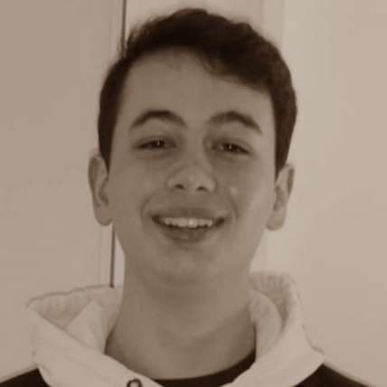
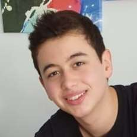

"L'informatique est un domaine d'avenir,
et un domaine qui me passionne depuis près de 10 ans."
À propos de moi
Je m'appelle Lorenzo Nocchi et j'ai 16 ans. Je suis maintenant en terminale générale étant donné que j'ai sauté une classe, le CP, dû à ma curiosité précoce du monde qui m'entourait,
curiosité qui persiste encore aujourd'hui.
Étant plus jeune, j'ai perdu l'audition à l'oreille gauche, et cet handicap m'a permis dans un premier temps de m'intéresser à l'anatomie; puis dans un second temps, comme
mon audition a évolué et que je perçois mieux les sons, je me suis intéressé à la musique et à l'acoustique (puis à l'anglais par conséquent). Depuis maintenant bientôt 4 ans, je fais
des musiques à mes heures perdues et je joue de la guitare depuis plus d'un an, ce qui m'a valu d'être intégré dans le groupe de musique de mon lycée.
J'ai été initié très jeune à l'informatique, ce qui m'a permis de voir ce milieu évoluer depuis environ 2011-2012; c'est un domaine dans lequel j'ai été émerveillé par le fait
de pouvoir faire autant de choses simplement avec un écran et un clavier; que ce soit jouer, dessiner, écrire, discuter ou même regarder des vidéos quand on veut;
et je suis encore impressionné aujourd'hui de la vitesse à laquelle l'informatique continue d'évoluer.
J'ai commencé à m'intéresser à la programmation en 6ème avec Scratch, puis en 5ème avec le Java grâce à Minecraft, et je m'y suis initié grâce à OpenClassrooms.
J'ai d'abord voulu m'orienter dans le jeu vidéo et j'ai fait beaucoup de petits jeux sur Scratch, avant de créer mon premier gros jeu sur RPG Maker après 1 an de développemment avec un
ami, et c'est ce qui m'a permis de me rendre compte du travail nécessaire pour la création d'un jeu et de l'importance du travail d'équipe dans ce domaine.
Une fois arrivé au lycée, j'ai choisi la spécialité Sciences de l'Ingénieur que j'ai fortement apprécié, en 1ère j'ai décidé de prendre en supplément les
Numériques et Sciences Informatiques (que j'ai adoré) et les Mathématiques. Voulant garder la SI et la NSI, j'ai décidé
de prendre l'option Maths. Complémentaires afin de garder des bases solides dans ce domaine sans pour autant abandonner les spécialités qui me plaisent.
Et me voici aujourd'hui à m'intéresser au web, une fillière de la programmation qui m'intéressait, grâce à la confection de ce portfolio!
